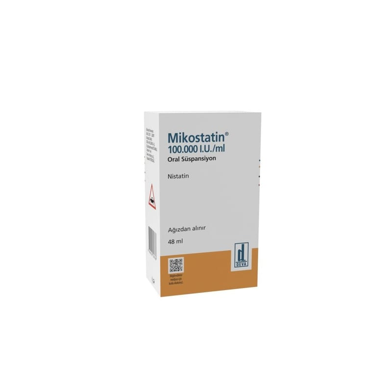

Mikostatin 100.000 I.U./ml Oral Süspansiyon 48 ml

Ne için kullanılır
KT · Bölüm 1MİKOSTATİN’in her 1 ml’si 100.000 ünite nistatin içerir.
MİKOSTATİN plastik kapak ile kapatılmış 48 dozluk cam şişelerde, damlalıklı kapak ile birlikte kullanıma sunulan hafif, krem sarısı, homojen (tekdüze), kiraz/nane aromalı opak (saydam olmayan) süspansiyondur (katı-sıvı karışım).
MİKOSTATİN antifungal (mantarlara karşı kullanılan ilaçlar) olarak adlandırılan bir ilaç grubuna dahildir.
MİKOSTATİN, ağız, boğaz veya bağırsaktaki mantar enfeksiyonlarını önlemek ve tedavi etmek için kullanılır. Ayrıca, vajinal pamukçuklu annelerin bebeklerinde ağızda pamukçuk oluşumuna karşı etkili koruma sağlar.